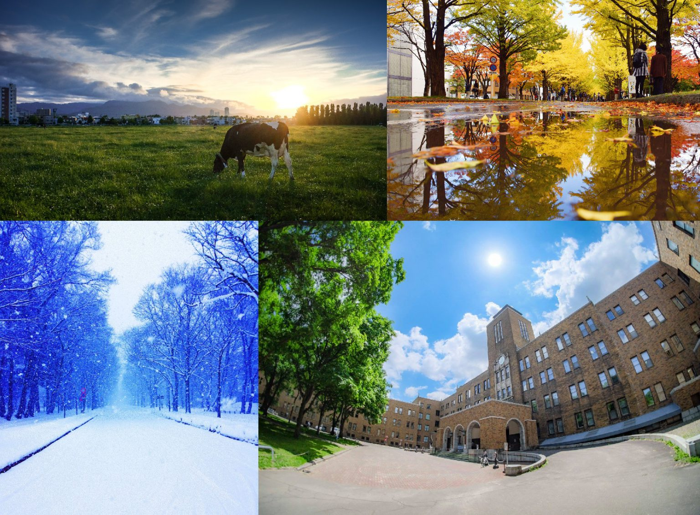

Study experience in hokkaido university
playing and eating together with those friends.I learned manymore about japanese language and culture throughout the experience. Also it was very interesting
to be able to discuss various countries,cultural backgrounds,language,social status etc with each cultural representative.
Hokkaido University

Boasting the largest number of faculties of Japan’s national universities, we cover almost
all areas of the humanities and social
and natural sciences and are leader in research activities
in Japan and the world.
Hokkaido university`s alumni include a Nobel laureate, business leaders,
research pioneers, artists and writers.
Contact Details
Map
https://github.com/Methni1996/Methni1996.git